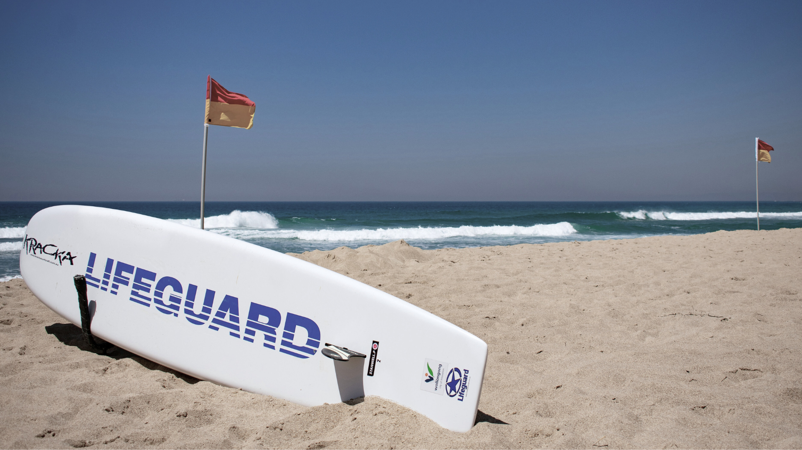
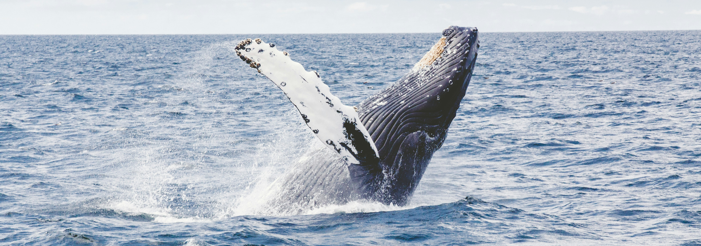

Live Updates
Today: 39°C
Not crowded
Moderate waves
Parking:
Lifeguards
Hours
High Season (Mid-September to May):
6:00 AM — 7:00 PM
Low Season (June to Mid-September):
7:00 AM — 5:00 PM
Guard Information
The Bronte Surf Life Saving Club (BSLSC), established in 1903, is one of the oldest surf lifesaving clubs in Australia. Located at Bronte Beach, the club plays a crucial role in ensuring beach safety through regular patrols and lifesaving services. The club is staffed by dedicated volunteers who provide essential rescue and first aid services, particularly during weekends and public holidays.
Guidelines
- Swim Between the Flags: Always swim between the red and yellow flags where lifeguards are present.
- No Smoking: Smoking is prohibited on the beach and in the surrounding park areas.
- No Alcohol: Consumption of alcohol is not allowed on the beach.
- No Glass Containers: Glass containers are not permitted on the beach to prevent injuries.
- Dog Restrictions: Dogs are not allowed on the beach. They are permitted in designated areas of Bronte Park but must be on a leash.
- Respect Marine Life: Do not disturb marine life. Be cautious of jellyfish and other sea creatures.
- Littering: Dispose of all trash in the provided bins. Keep the beach clean.
- Barbecue Use: Use designated barbecue areas in Bronte Park. Do not bring portable barbecues onto the beach.
- Parking Regulations: Follow all parking signs and regulations. Illegally parked vehicles may be fined or towed.
- Beach Hours: Adhere to beach opening and closing times as posted.
Safety
Important Safety Information for Bronte Beach
- Rip Currents: Bronte Beach is known for its strong rip currents, particularly the notorious “Bronte Express” rip. Always swim between the red and yellow flags where lifeguards are present.
- Lifeguard Patrols: The beach is patrolled by Waverley Council lifeguards daily (except during winter) and volunteer lifesavers from the Bronte Surf Life Saving Club on weekends and public holidays.
- Swimming Areas: For safer swimming, consider using the Bronte Baths, a 30-meter ocean pool that provides a controlled environment away from the surf.
- Surfing Conditions: The surf at Bronte can be challenging due to the rocky headlands and underwater rocks. Only experienced surfers should attempt to ride the waves here.
- Weather Conditions: Always check the weather and surf conditions before heading to the beach. Sudden changes can make the water dangerous.
- Sun Protection: The Australian sun can be very strong. Wear sunscreen, a hat, and protective clothing, and seek shade during peak UV hours.
- Hydration: Bring plenty of water to stay hydrated, especially on hot days.
- First Aid: Familiarize yourself with the location of first aid facilities and emergency contact numbers.
- Beach Rules: Follow all posted signs and beach rules to ensure your safety and the safety of others.
- Marine Life: Be aware of marine life, such as jellyfish, which can sometimes be present in the water.

Wildlife

Birdlife Life at Bronte Beach
Bronte Beach is part of the Bronte-Coogee Aquatic Reserve, which is home to a diverse array of marine life. The rocky shores and nearshore reefs are teeming with species such as blue groper, eastern rock lobsters, and various types of sea urchins and anemones. Snorkelers and divers often explore these waters to observe the vibrant underwater ecosystem up close.

Marine Life at Bronte Beach
The coastal area around Bronte Beach is also a haven for birdwatchers. Commonly spotted species include the Australian pelican, silver gull, and various types of cormorants. These birds are often seen fishing in the shallow waters or resting on the rocky outcrops along the shore. The surrounding parklands provide additional habitats for smaller bird species, making Bronte Beach a great spot for nature enthusiasts.